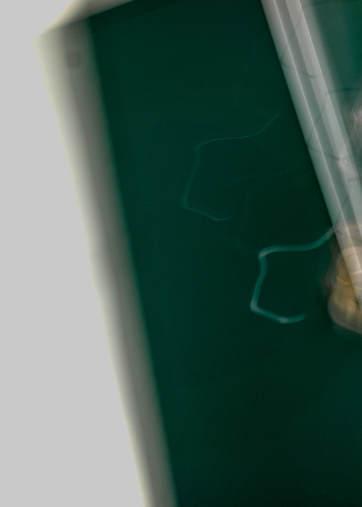

As someone who has experimented with Photoshop and Lightroom for years, this assignment was both interesting and helpful. I think the work that I have done with Adobe products before this assignment has been self-taught and mainly relying on Google and other forms of self-help resources. I am enjoying learning the “proper” way of using Photoshop as it will prove useful in my personal and professional endeavors in photography.
During the lab, I enjoyed taking pictures and I am interested in what the rest of the class took pictures of. I have experience with photography, but it has been quite a bit of time since I experimented with manual settings, so it was a great refresher for me to toggle with the settings of the camera. I am interested in doing more photography projects, even though I am not entirely sure that they are a part of the syllabus. Either way, this was a great experience learning more about Photoshop and its technicalities. What I found most challenging was striking a balance between editing an image to improve it and over-editing it to the point where it looks unnatural. This raised interesting questions for me about what I find visually and aesthetically appealing. This exercise revealed to me questions about what I am drawn to visually.
Overall, this lab helped me develop both technical skills and a more critical eye for images. It was a great introduction to the ways photography and digital editing intersect, and I look forward to continuing to develop my skills in both areas.
For this image I wanted to play with lines and color. I wanted to edit the photo to an unrecognizable point.

I experimented with this image by using a slower shutter speed and it came out very blurry and mysterious. I chose to use this image because the subject in indescribable and very hard to place.